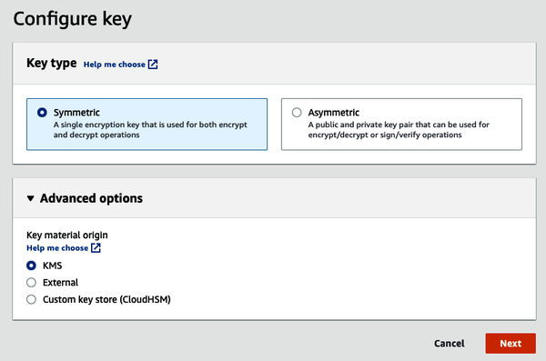

Chapter 3 talked about the importance of encryption for all the data that is stored on AWS. You can use AWS Key Management Service (KMS) to simplify the process of data encryption and to manage the encryption keys that are used to encrypt your data. In this appendix, I will give you a practical overview of the process and show you how you can encrypt your sensitive data on AWS using envelope encryption. As a reminder, envelope encryption is the process where you encrypt large amounts of data with an encryption key (called the data key) and then use AWS KMS to encrypt this data key using a key controlled by AWS Customer Master Key (CMK).
In order to work with this example, you will need the following applications installed on your computer:
Once you have your CMK ready, let’s start using it to encrypt plaintext. In order to work with binary data, you need to encode your data with Base64. Base64 is a group of binary-to-text encoding schemes that represent binary data in an ASCII string format. Typically, Base64-encoding schemes are used when digital data needs to be encoded using algorithms that predominantly deal with text. In this way, the data will remain intact during the encryption and decryption process.
To transmit a message, follow these steps:
Create CMK on AWS. This will be the key that will be used to encrypt your data.
Encode your message with Base64. This common step in most encryption procedures ensures that binary data can be transported over channels without modification.
Encrypt your message using the CMK by calling the aws kms encrypt command.
As a reminder, the CMK is used to mainly encrypt your data key using envelope encryption. Figure C-1 shows how you can create a CMK using the AWS Management Console.

Next, Base64-encode your data:
$ echo <plain text message> | base64
Finally, encrypt using the CMK:
$ aws kms encrypt --plaintext $(echo <plain text message> | base64) --key-id alias/worklaptop
The decryption process is similar to the encryption process. You simply call the AWS KMS service with the ciphertext-blob that you wish to decrypt:
$ aws kms decrypt --ciphertext-blob "AQECAHjbw6xdyJKSCUiwAFsMp6vMYbXV2mHSY9cg2qHmkIZ2gwAAAGswaQYJKoZIhvcNAQcGoFwwWg IBADBVBgkqhkiG9w0BBwEwHgYJYIZIAWUDBAEuMBEEDFPI6F3UdqaYj6iBMwIBEIAoCz2LrUes+ 3SM70iFjgqAkxQoQYB/I617gN5zK4h/1aAp/ciweS8+5g==”
As discussed in Chapter 3, basic encryption is great for payloads of small sizes. However, AWS KMS sets a limit of 4 KB on any data that can be encrypted using basic encryption. Hence, for the vast majority of your encryption needs, you would be using envelope encryption. As a reminder, envelope encryption is a three-step process:
Create a master key. This master key can be used to encrypt or decrypt smaller payloads of data, which include data keys.
Create data keys to encrypt or decrypt your actual plaintext data.
Encrypt your data using the data key and encrypt your data key using the CMK. The encrypted data key can be stored alongside the ciphertext data, while the plaintext data key can be deleted.
The only way to decrypt the ciphertext is by first decrypting the data key, which is not available to anyone except the third party that wants to decrypt it.
Creating a master key is identical to the first step in basic encryption given earlier. You can create a CMK either using the AWS CLI or within the AWS console.
For generating data keys, AWS lets you make a single call to generate a data key. AWS will return the plaintext data key as well as the encrypted data key back to you. In this way, everything you need in the next step is made available to you:
$ aws kms generate-data-key --key-id alias/demo --key-spec AES_256
{
"CiphertextBlob":
"AQEDAHjbw6xdyJKSCUiwAFsMp6vMYbXV2mHSY9cg2qHmkIZ2gwAAAH4wfAYJKoZIhvc
NAQcGoG8wbQIBADBoBgkqhkiG9w0BBwEwHgYJYIZIAWUDBAEuMBEEDD2ZhMHl8hgr2DP
AawIBEIA7Z14WGErIjA/T+qZi7cVsXIHeySa8FYSuox07nyHs7JO6g39jBo1XSWsVjSu
YL8paWRgqbFKcUQX482w=",
"Plaintext": "IyBK1p9nMFCFtwDT/PbFf3DjM/nRlUcw37MTb/+KYgs=",
"KeyId": "arn:aws:kms:us-east-1:248285616257:key/27d9aa85-f403-483e-
9239-da01d5be4842"
}
You will be using the plaintext data key in the next step to encrypt the plaintext data. Remember, when AWS returns the key to you, it is Base64 encoded. In case your encryption algorithm expects a Base64-decoded plaintext data key, Base64 decodes this key before storing it:
$ echo teQj2q4G6CdDbLr+uoENkCef9y/ila6P6+rp9UbInmc= | base64 --decode > plain-text-data-key.txt
You will also be storing the encrypted data key next to the ciphertext data. So it is best to save it in this step:
$ echo
"AQEDAHjbw6xdyJKSCUiwAFsMp6vMYbXV2mHSY9cg2qHmkIZ2gwAAAH4wfAYJKoZIhvc
NAQcGoG8wbQIBADBoBgkqhkiG9w0BBwEwHgYJYIZIAWUDBAEuMBEEDD2ZhMHl8hgr2DP
AawIBEIA7Z14WGErIjA/T+qZi7cVsXIHeySa8FYSuox07nyHs7JO6g39jBo1XSWsVjSu
YL8paWRgqbFKcUQX482w=" > cipher-text-data-key.txt
In the final step, you can use the plaintext data key from the previous Step 2 and use the AES-256 algorithm to encrypt your data. If you use OpenSSL to encrypt, you can encrypt your plaintext and store it in a file called enc.txt:
$ openssl enc -e -aes256 -in <plain text file> -out cipher-text-data-blob.txt -k plain-text-data-key.txt
Once you are done with the encryption, you should delete your plaintext data key to make sure that the only way to decrypt this data (in the absence of the plain-text-data-key.txt) will be by first decrypting the cipher-text-key.txt:
$ rm ./plain-text-data-key.txt && rm ./<plain text file>
The decryption process is similar to the encryption process:
Since the only place that has the key is your disk in an encrypted form, first you need to get the plaintext version of the data key.
Use the plaintext version of this key to decrypt cipher-text-data-blob.txt.
The plaintext data key can be obtained by decrypting cipher-text-key.txt using AWS KMS:
$ aws kms decrypt --ciphertext-blob $(cat ./cipher-text-data-key.txt)
{
"KeyId":
"arn:aws:kms:us-east-1:248285616257:key/27d9aa85-f403-483e-9239
-da01d5be4842,
"Plaintext": "IyBK1p9nMFCFtwDT/PbFf3DjM/nRlUcw37MTb/+KYgs=",
"EncryptionAlgorithm": "SYMMETRIC_DEFAULT"
}
As you might have guessed, the plaintext data key returned in this step is Base64 encoded, and if your decryption algorithm requires a Base64-decoded key, you may have to Base64-decode this key:
$ echo teQj2q4G6CdDbLr+uoENkCef9y/ila6P6+rp9UbInmc= | base64
--decode > plain-text-data-key.txt
Now you’ll use the plaintext data key to decrypt cipher-text-data-blob.txt. You have your ciphertext as well as the plaintext form of the key that is required to decrypt this text. So you can decrypt it using the OpenSSL toolkit, which you used to encrypt this text in the first place:
$ openssl enc -d -aes256 -in cipher-text-data-blob.txt -k ./plain-text-data-key.txt <plain text data>